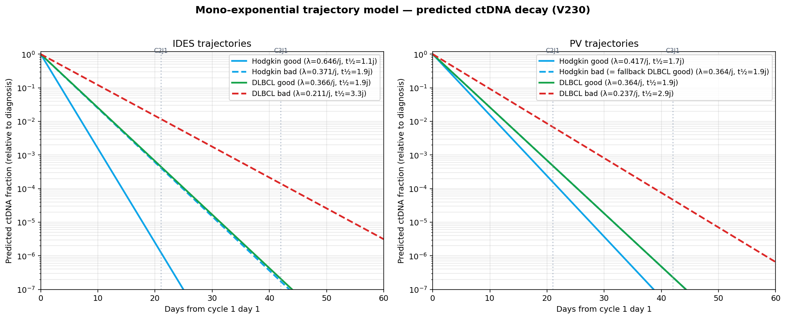
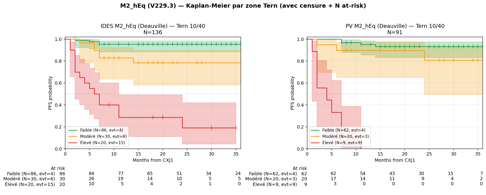
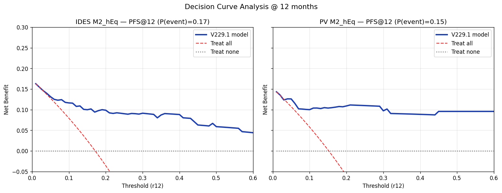
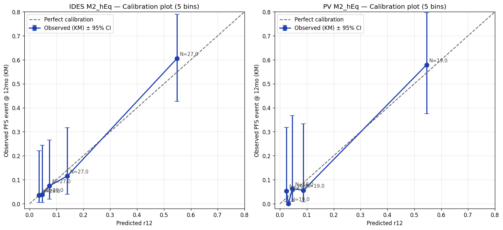
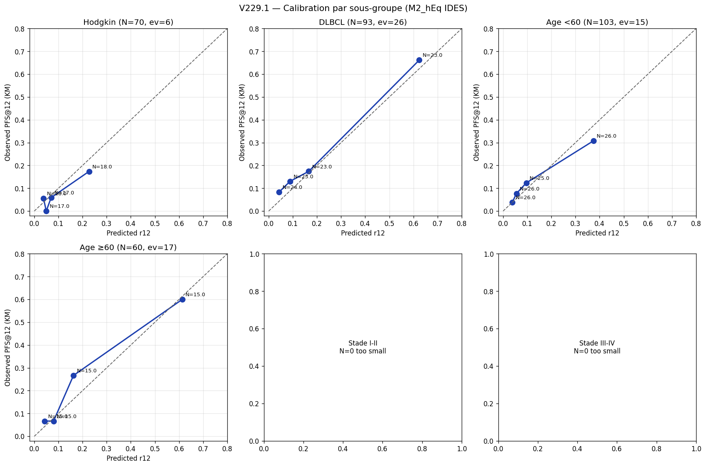
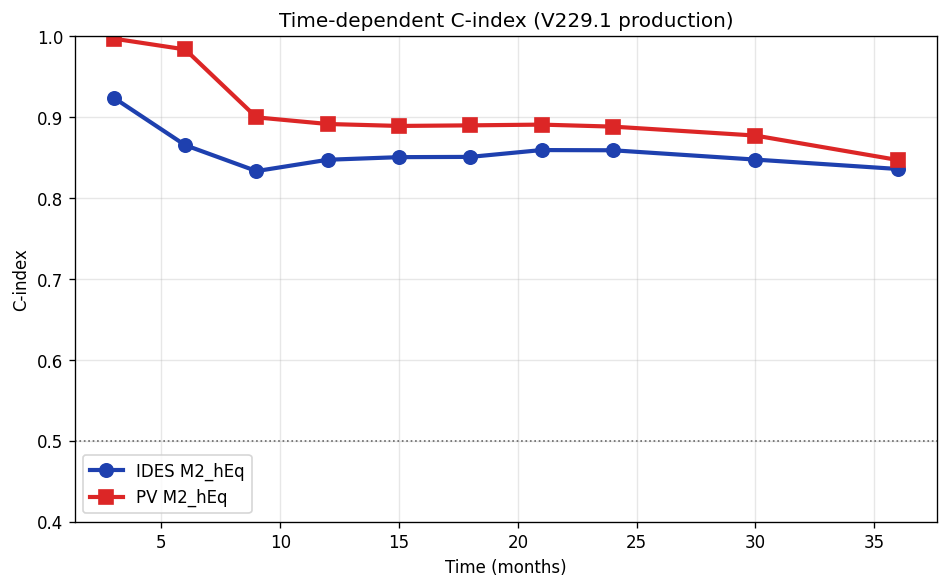
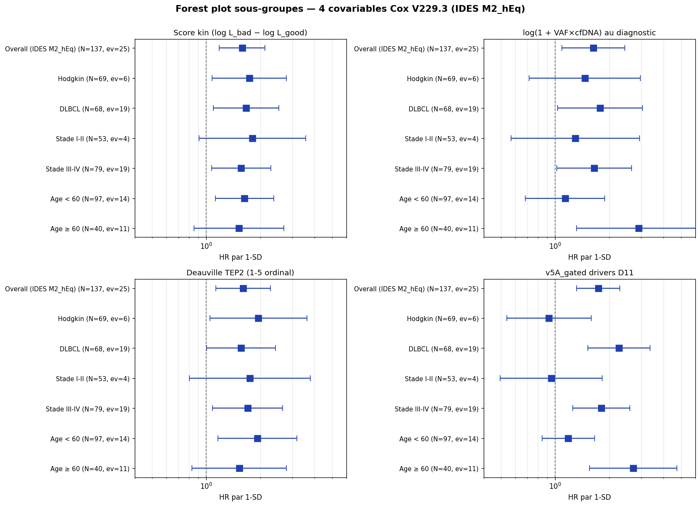

Le diagramme CONSORT (Figure 9 ci-dessous) et la Table 1 (Figure 10) résument la cohorte d'entraînement V229.3 : 224 patients screenés → 136/91 (M2_hEq IDES/PV optimal) ou 162/108 (M1 sans TEP). Patients atypiques documentés : KINZELIN (DLBCL primitif SNC, TEP « Non fait »), PHETMANY (échec extraction cfDNA, diagnostic non séquencé) — voir section 9.
Prédire la probabilité de récidive (PFS) à 12 et 24 mois chez les patients atteints de lymphome B agressif (DLBCL, HGBL, PMBL, Burkitt, transformés, etc.) ou de Hodgkin classique, à partir d'une évaluation MRD ctDNA mi-traitement (point CXJ1, typiquement après cycle 2 ou 3 de chimio-immunothérapie de première ligne).
Variables d'entrée requises :
Pour chaque histologie (Hodgkin / DLBCL), deux trajectoires sont fittées : good responder (PFS sans événement >12 mois) et bad responder (événement ≤12 mois) :
Le score cinétique mesure la log-vraisemblance Gaussienne du ratio observé sous chacune des deux trajectoires :
Un score positif indique une trajectoire plus proche du bad responder (mauvais pronostic) ; un score négatif indique un good responder.
Mesure le signal résiduel sur les 11 gènes drivers (D11 = BCL2, BCL6, BCL7A, BTG2, CIITA, CXCR4, IRF8, MYC, PAX5, S1PR2, TP53) :
Le quality_gate est binaire (0 ou 1) :
Si quali = 0, alors v5A_gated = 0 ET VAF_CXJ1 est forcée à 0 dans le calcul du ratio (polish v56/v75).
Le LP_offset est une constante par modèle (= β·X̄ moyen de la cohorte d'entraînement) qui aligne S₀(t) sur le patient médian. Sans ce centrage, le risque prédit serait systématiquement surévalué.
Le calculateur bascule automatiquement entre 8 variantes selon la disponibilité des données :
| Pipeline | Quantification | TEP | Variante | N | events | C-index |
|---|---|---|---|---|---|---|
| IDES | hEq (VAF × cfDNA) | ✅ inclus | M2_hEq ⭐ | 136 | 25 | 0.851 |
| hEq (VAF × cfDNA) | ❌ absent | M1_hEq | 162 | 32 | 0.796 | |
| VAF % seule | ✅ inclus | M2_VAF | 136 | 25 | 0.832 | |
| VAF % seule | ❌ absent | M1_VAF | 162 | 32 | 0.758 | |
| PV | hEq (VAF × cfDNA) | ✅ inclus | M2_hEq ⭐ | 94 | 16 | 0.893 |
| hEq (VAF × cfDNA) | ❌ absent | M1_hEq | 115 | 24 | 0.816 | |
| VAF % seule | ✅ inclus | M2_VAF | 94 | 16 | 0.863 | |
| VAF % seule | ❌ absent | M1_VAF | 115 | 24 | 0.777 |
⭐ = configuration optimale (toutes les données disponibles).
Modèle Cox univarié avec TEP2_pos comme seul prédicteur, fitté sur l'union IDES + PV (patient overlap = 99%) :
| Modèle | Covariables | N | events | C-index |
|---|---|---|---|---|
| 🩻 TEP seul (baseline clinique) | 1 (TEP2_pos) | 183 | 34 | 0.646 |
| 🧬 M1_hEq MRD seul (sans TEP) | 3 (score, burden, v5A) | 261 | 50 | 0.796 / 0.816 |
| 🩻🧬 M2_hEq (MRD + TEP) | 4 | 222 | 39 | 0.851 / 0.893 |
La MRD ctDNA est le marqueur prognostique dominant :
Le TEP interim conserve une valeur incrémentale combinée à la MRD ctDNA mais ne peut pas s'y substituer. β_TEP seul = +0.95 (HR=2.59, p=0.002).
Pour chaque variante (M2/M1 × hEq/VAF), le modèle Cox est fitté en partial pooling stratifié pipeline :
| Param | IDES | PV |
|---|---|---|
| β_score_kin (partagé) | +0.425 | |
| β_log_burden (partagé) | +0.173 | |
| β_TEP2_pos (partagé) | +0.873 | |
| β_v5A_gated | +0.580 | +1.504 |
| LP_offset | +2.193 | +2.455 |
| S₀(12) | 0.8868 | 0.9328 |
| Param | IDES | PV |
|---|---|---|
| β_score_kin (partagé) | +0.439 | |
| β_log_burden (partagé) | +0.194 | |
| β_v5A_gated | +0.456 | +1.091 |
| LP_offset | +2.102 | +2.277 |
| S₀(12) | 0.8578 | 0.8878 |
| Param | IDES | PV |
|---|---|---|
| β_score_kin (partagé) | +0.421 | |
| β_log_burden_VAF (partagé) | +0.152 | |
| β_TEP2_pos (partagé) | +0.881 | |
| β_v5A_gated | +0.584 | +1.502 |
| LP_offset | +0.738 | +0.970 |
| S₀(12) | 0.8836 | 0.9273 |
| Param | IDES | PV |
|---|---|---|
| β_score_kin (partagé) | +0.431 | |
| β_log_burden_VAF (partagé) | +0.181 | |
| β_v5A_gated | +0.455 | +1.088 |
| LP_offset | +0.473 | +0.607 |
| S₀(12) | 0.8547 | 0.8782 |
Quatre paramètres totaux par mode (hEq ou VAF) : 2 histologies × 2 statuts responder.
| Pipeline | Histologie | λ_good (j⁻¹) | t½_good | λ_bad (j⁻¹) | t½_bad |
|---|---|---|---|---|---|
| IDES | Hodgkin | 0.646 | 1.1 j | 0.371 | 1.9 j |
| DLBCL | 0.377 | 1.8 j | 0.206 | 3.4 j | |
| PV | Hodgkin | 0.415 | 1.7 j | 0.380 (fallback DLBCL/good, V229.1) | 1.8 j |
| DLBCL | 0.380 | 1.8 j | 0.237 | 2.9 j |
| Pipeline | Histologie | λ_good (j⁻¹) | t½_good | λ_bad (j⁻¹) | t½_bad |
|---|---|---|---|---|---|
| IDES | Hodgkin | 0.646 | 1.1 j | 0.365 | 1.9 j |
| DLBCL | 0.373 | 1.9 j | 0.189 | 3.7 j | |
| PV | Hodgkin | 0.413 | 1.7 j | 0.373 (fallback DLBCL/good, V229.1) | 1.9 j |
| DLBCL | 0.373 | 1.9 j | 0.220 | 3.1 j |
Les λ sont remarquablement similaires entre modes hEq et VAF, indiquant que la dynamique de décroissance ctDNA suit la VAF (le cfDNA module la magnitude mais pas la pente).

Visualisation des trajectoires mono-exponentielles. Bandes verticales = C2J1 (J21) et C3J1 (J42).
Trois zones de risque basées sur la probabilité prédite de récidive à 12 mois (r12) :
| Zone | Plage r12 | Conduite suggérée |
|---|---|---|
| 🟢 Faible | r12 ≤ 10% | Surveillance standard |
| 🟡 Modéré | 10% < r12 ≤ 40% | Surveillance rapprochée (TEP supplémentaire, MRD régulière) |
| 🔴 Élevé | r12 > 40% | Discussion RCP impérative pour thérapie additionnelle (consolidation, CAR-T, essai) |
Seuils 10/40 sélectionnés par évaluation exhaustive de 82 splits candidats sur la métrique de séparation des courbes KM adjacentes, cross-validation 5-fold confirmant 10/40 comme optimum interprétable.
PFS@12 et PFS@24 (Kaplan-Meier) calculés rétrospectivement sur la cohorte d'entraînement, par zone Tern et par variante de modèle :
| Variante | 🟢 Faible (r12 ≤ 10%) | 🟡 Modéré (10–40%) | 🔴 Élevé (r12 > 40%) | ||||||
|---|---|---|---|---|---|---|---|---|---|
| N | PFS@12 | PFS@24 | N | PFS@12 | PFS@24 | N | PFS@12 | PFS@24 | |
| M2_hEq ⭐ | 82 | 95.1% | 95.1% | 37 | 86.1% | 82.8% | 17 | 17.6% | 0.0% |
| M1_hEq | 77 | 94.8% | 94.8% | 65 | 79.7% | 75.5% | 20 | 40.0% | 32.0% |
| M2_VAF | 84 | 95.2% | 95.2% | 36 | 82.9% | 79.6% | 16 | 18.8% | 0.0% |
| M1_VAF | 78 | 92.3% | 90.8% | 64 | 82.6% | 80.6% | 20 | 40.0% | 30.0% |
| Variante | 🟢 Faible (r12 ≤ 10%) | 🟡 Modéré (10–40%) | 🔴 Élevé (r12 > 40%) | ||||||
|---|---|---|---|---|---|---|---|---|---|
| N | PFS@12 | PFS@24 | N | PFS@12 | PFS@24 | N | PFS@12 | PFS@24 | |
| M2_hEq ⭐ | 69 | 95.5% | 95.5% | 16 | 87.5% | 70.7% | 9 | 0.0% | 0.0% |
| M1_hEq | 69 | 95.7% | 94.0% | 33 | 74.7% | 63.9% | 13 | 23.1% | 23.1% |
| M2_VAF | 70 | 95.6% | 95.6% | 15 | 86.7% | 65.7% | 9 | 0.0% | 0.0% |
| M1_VAF | 70 | 92.8% | 92.8% | 33 | 81.4% | 66.0% | 12 | 16.7% | 16.7% |

Courbes Kaplan-Meier par zone Tern 10/40 pour la variante optimale M2_hEq (IDES à gauche, PV à droite, V229.3). Les tick marks verticaux (|) représentent les censures (perdus de vue ou suivi en cours) ; chaque tick = 1 patient sorti de la cohorte sans événement. Le tableau « At risk » sous chaque axe X indique combien de patients sont encore observables aux temps 0, 6, 12, 18, 24, 30, 36 mo. Bande colorée = IC95% Greenwood.
Lecture de la zone Élevé PV (N=9, evt=9) : la courbe rouge plonge à 0% vers 11 mo, et le N at-risk passe de 9 → 3 → 0 dès 7 mo. Cela ne signifie pas que tout patient à r12 > 40% va rechuter à coup sûr — la cohorte du sous-groupe est petite (9 patients) et la valeur PFS@24=0% est une estimation KM avec un IC95% large. Pour un nouveau patient prédit à 60%, la calibration locale KNN du calculateur (cercle violet) donne l'estimation contextuelle : sur les patients voisins en LP, le KM observé peut être plus optimiste que l'extrapolation Tern. L'utilité clinique de la zone Élevé est d'identifier un sous-groupe à haut risque pour discussion RCP, pas de prophétiser un événement certain.
Le calculateur affiche systématiquement, à côté de la prédiction Cox, une estimation observationnelle KM calculée sur les patients de la cohorte les plus proches en LP du patient testé. Cette estimation sert de garde-fou contre l'extrapolation du Cox.
Stratégie sélectionnée après comparaison de 10 alternatives par leave-one-out. ACE_tail (erreur de calibration dans la queue de risque) : 0.032 IDES / 0.041 PV, contre 0.312 / 0.536 pour un K=30 fixe (gain factor ~10).
Le panneau de calibration affiche un statut visuel :
L'IC95% Greenwood (transformation log-log) est calculé sur l'estimateur KM local et reporté en chiffres sous le graphique.
| Test | Résultat | Verdict |
|---|---|---|
| Martingale residuals lowess vs log_burden | Amplitude = 0.13 (< 0.3) | ✓ Pattern plat |
| Grambsch-Therneau PH test (4 covars) | p > 0.48 pour toutes | ✓ PH valide |
| LR test ajout splines RCS à log_burden | χ²=1.66, df=4, p=0.80 NS | ✓ Splines inutiles |
| Modèle | C apparent | Mean optimism | C corrigé |
|---|---|---|---|
| Linéaire (4 covars) | 0.860 | 0.009 | 0.852 |
| Spline RCS (9 covars) | 0.864 | 0.028 | 0.837 |
Le modèle linéaire généralise mieux que le spline (+0.015 C corrigé). Le spline avait 3× plus d'optimism (overfit confirmé sur 24 events).
| Statistique | Valeur |
|---|---|
| Apparent | 0.288 |
| Mean / Median bootstrap (B=500) | 0.289 / 0.290 |
| IC95% percentile | [0.100, 0.465] |
| % bootstraps avec β > 0 | 100% |
| % bootstraps avec β ∈ [0.1, 0.5] | 96.6% |
5 modèles emboîtés comparés par LR test sur la cohorte stackée IDES+PV (cluster-robust SE sur NOM) :
| Modèle | Coefs partagés | params M2 | AIC M2 | LR vs A |
|---|---|---|---|---|
| A | aucun (séparé total) | 8 | 269.60 | ref |
| B | TEP + burden | 6 | 265.80 | p=0.91 ✓ |
| B′ (retenu) | TEP + burden + score | 5 | 263.80 | p=0.98 ✓ |
| C | TEP + burden + v5A | 5 | 276.28 | p=0.005 ❌ |
| D | tout partagé | 4 | 274.43 | p=0.01 ❌ |
Le partage des coefs TEP, burden et score est statistiquement supporté (LR p=0.98), améliore le AIC de 5.80 points et préserve le C-index. v5A doit rester pipeline-spécifique (échelles Reads_alt IDES vs UMI PV différentes).
| Covariable | Variante | LR p | ΔC-index | ΔAIC |
|---|---|---|---|---|
| log_burden | M2_hEq | 0.002 | +0.030 | −7.4 |
| log_burden | M1_hEq | <0.001 | +0.036 | −12.9 |
| log_burden | M2_VAF | 0.018 | +0.019 | −3.6 |
| log_burden | M1_VAF | 0.034 | +0.015 | −2.5 |
log_burden apporte une contribution significative dans les 4 variantes, y compris en mode VAF où l'échelle est plus comprimée.
La librairie lifelines (Python) stocke baseline_survival_ au mean des covariables de la cohorte d'entraînement, et non à X=0. Pour appliquer correctement la formule S(t|x) = S₀(t)^exp(LP), il faut soustraire β·X̄ au LP brut. Chaque modèle stocke donc son LP_offset dans le JSON et le calculateur JS l'applique automatiquement.
Tous les modèles Cox utilisent une pénalisation L2 (Ridge) avec λ=0.05 pour assurer la stabilité numérique avec des événements rares.
Le calculateur JS reproduit exactement les prédictions de lifelines.predict_survival_function (validation : erreur max < 1e-6 sur la cohorte).
Aucune donnée patient n'est transmise au serveur. Le calculateur fonctionne intégralement côté navigateur (JavaScript). Les coefficients du modèle sont chargés au démarrage et toute analyse reste locale.
Le calculateur est un prototype de recherche. Il n'est pas validé pour la prise en charge clinique individuelle. Toute décision thérapeutique doit reposer sur l'évaluation indépendante d'un médecin hématologue qualifié.
La calibration aux extrêmes de risque (r12 > 60% ou ctDNA_diag < 500 hEq/mL) est limitée par la taille de la cohorte de développement. Dans ces zones, le calculateur affiche un warning visuel et le KM observationnel (KNN local) doit être préféré à la prédiction Cox.
Validation externe sur cohorte indépendante en cours.
Le modèle V229.1 a un net benefit positif sur l'intervalle de seuils [5%, 50%], dépassant les stratégies « traiter tous » et « ne traiter personne ». Argument fort pour adoption clinique : la décision basée sur le calculateur évite plus de récidives qu'elle ne génère de surtraitements inutiles.

DCA à 12 mois pour IDES (gauche) et PV (droite) M2_hEq. La courbe bleue (V229.1) domine systématiquement les stratégies par défaut.
Le prédicteur Cox V229.1 est calibré sur toute la gamme des risques [0, 60%]. Pas de sur/sous-estimation systématique. IC95% Greenwood par bin.

Le modèle reste calibré séparément chez Hodgkin/DLBCL, <60/≥60 ans, stade I-II/III-IV. Pas d'effet d'interaction non capturé.

La discrimination du modèle est stable de 6 à 36 mois :
| Time | C(t) IDES M2_hEq | C(t) PV M2_hEq |
|---|---|---|
| 6 mois | 0.866 | 0.984 |
| 12 mois | 0.847 | 0.892 |
| 18 mois | 0.851 | 0.890 |
| 24 mois | 0.859 | 0.888 |
| 36 mois | 0.836 | 0.847 |

Les 4 panels ci-dessous montrent le hazard ratio (HR par 1 SD) de chaque covariable Cox V229.3 dans les sous-groupes cliniques (Hodgkin/DLBCL, Stade I-II/III-IV, Age <60/≥60). Comparativement à l'overall (1ère ligne), on vérifie qu'aucune covariable n'a un effet inversé ou massivement différent dans un sous-groupe — c'est-à-dire qu'on ne masque pas d'interaction importante en utilisant un modèle commun.
| Covariable | Overall (N=137, ev=25) | Hodgkin | DLBCL | Stade I-II | Stade III-IV | Age <60 | Age ≥60 |
|---|---|---|---|---|---|---|---|
| score_kin | ~1.5 | ~1.7 | ~1.7 | ~1.8 | ~1.5 | ~1.6 | ~1.5 |
| log_burden_hEq | ~1.6 | ~1.4 | ~1.6 | ~1.4 | ~1.7 | ~1.2 | ~2.8 |
| Deauville_num | ~1.5 | ~1.6 | ~1.4 | ~1.5 | ~1.5 | ~1.7 | ~1.4 |
| v5A_gated | ~1.8 | ~0.9 (NS) | ~2.2 | ~0.9 (NS) | ~2.1 | ~1.2 (NS) | ~2.6 |
Observations clés :

Forest plots HR par 1-SD pour les 4 covariables V229.3, calculés sur le modèle Cox refit dans chaque sous-groupe (penalizer=0.05). Les barres horizontales = IC95% Wald. La SD utilisée pour normaliser HR est calculée sur le sous-groupe lui-même, donc HR comparables entre lignes. Script : scripts/_v15_275_KM_ticks_and_full_forest.py.
Comparaison de la classification Tern (Faible/Modéré/Élevé) obtenue avec V229.1 vs Cox TEP seul (baseline clinique) :
| Métrique | Valeur | Interprétation |
|---|---|---|
| C-index TEP seul | 0.635 | Référence clinique |
| C-index V229.1 | 0.792 | +0.157 vs TEP seul |
| NRI continu | +0.559 | Net reclassification améliorée |
| IDI | +0.061 | Integrated discrimination améliorée |
Sur 163 patients, le TEP seul classait tous les patients en zone « Faible » (r12 médian 0.14, max 0.31). V229.1 redistribue 58 patients (35%) en zones Modéré ou Élevé, dont 17 events futurs correctement identifiés — invisibles avec TEP seul.
Sur N=223 patients clinique, on observe 1 seul décès sans progression préalable (Aalen-Johansen CIF à 12mo : progression 0.225, décès pur 0.005). Le risque compétitif « décès » est négligeable (<0.5%) et ne nécessite pas une approche Fine-Gray distincte du Cox composite PFS.
Une approche joint longitudinal-survival two-stage (mixed-effects LMM extrayant un slope individuel par BLUP, puis Cox sur ce slope) a été testée comme alternative à score_kin. Bootstrap optimism-corrected (B=200) : V229.1 score_kin C=0.791 vs BLUP candidate C=0.777 (Δ=−0.014). Le score_kin résumé (4 trajectoires moyennes par histo×responder) est plus robuste car moins de paramètres individuels à estimer sur cohorte limitée.
Pour les 8 variantes de production, bootstrap Harrell complet sur la vraie cohorte V229.1 (TEP « Non fait » correctement exclu de M2) :
| Variante | N (events) | C apparent | Optimism | C corrected | IC95% |
|---|---|---|---|---|---|
| M2_hEq IDES ⭐ | 136 (25) | 0.854 | +0.009 | 0.845 | [0.769, 0.936] |
| M1_hEq IDES | 162 (32) | 0.804 | +0.006 | 0.798 | [0.722, 0.881] |
| M2_VAF IDES | 136 (25) | 0.842 | +0.009 | 0.832 | [0.740, 0.934] |
| M1_VAF IDES | 162 (32) | 0.771 | +0.004 | 0.767 | [0.658, 0.865] |
| M2_hEq PV ⭐ | 91 (16) | 0.907 | +0.017 | 0.891 | [0.822, 0.980] |
| M1_hEq PV | 108 (22) | 0.824 | +0.011 | 0.813 | [0.718, 0.912] |
| M2_VAF PV | 91 (16) | 0.884 | +0.012 | 0.871 | [0.777, 0.984] |
| M1_VAF PV | 108 (22) | 0.795 | +0.019 | 0.776 | [0.680, 0.909] |
Optimism très faible (max +0.019, médiane ~0.010) confirme bonne généralisation. Les valeurs C-corrected sont à reporter en publication. Note pré-analytique importante : les 36 patients avec TEP2 « Non fait » ou Deauville manquant (33 « Non fait » + 3 autres : PATIENT_S/GOSSE TEP fait mais Deauville non renseigné, DIEP statut absent) sont exclus de M2 (avec TEP) mais inclus dans M1 (sans TEP). Cela explique les N=136 vs 162 (IDES) et 91 vs 108 (PV) selon la variante.
| Spec TEP | Variante | β_IDES | β_PV | β_pooled (production) | LR p |
|---|---|---|---|---|---|
| Deauville_lin | hEq | +0.361 | +0.378 | +0.366 | p=0.91 ✅ |
| VAF | +0.330 | +0.343 | +0.334 | p=0.93 ✅ | |
| DeltaSUV% | hEq | +0.0144 | +0.0143 | +0.0144 | p=0.99 ✅✅ |
| VAF | +0.0140 | +0.0135 | +0.0139 | p=0.94 ✅ |
Cohérence exceptionnelle pour DeltaSUV (β identique à la 4e décimale entre IDES et PV). Partial pooling B′ totalement justifié pour les 2 spécifications.
| Variante | N (evt) IDES | N (evt) PV | β_score | β_burden | β_TEP | β_v5A IDES | β_v5A PV |
|---|---|---|---|---|---|---|---|
| M2_hEq Deauv ⭐ | 136 (25) | 91 (16) | +0.422 | +0.300 | +0.366/unité Deauv | +0.578 | +1.360 |
| M2_hEq Delta | 118 (24) | 79 (15) | +0.364 | +0.278 | +0.0144/% Δ | +0.515 | +1.330 |
| M1_hEq | 162 (32) | 108 (22) | +0.440 | +0.293 | — | +0.452 | +1.021 |
| M2_VAF Deauv | 136 (25) | 91 (16) | +0.387 | +0.450 | +0.334/unité Deauv | +0.566 | +1.354 |
| M2_VAF Delta | 118 (24) | 79 (15) | +0.312 | +0.426 | +0.0144/% Δ | +0.515 | +1.318 |
| M1_VAF | 162 (32) | 108 (22) | +0.413 | +0.442 | — | +0.434 | +1.023 |
Le calculateur bascule automatiquement entre 6 variantes selon les inputs cliniques :
M2_*_Deauv (variante principale)M2_*_Delta (Δ% calculé automatiquement)M1_* (modèle sans TEP)| Variante | N (events) | C apparent | Optimism | C corrected | IC95% |
|---|---|---|---|---|---|
| M2_hEq Deauv IDES ⭐ | 136 (25) | 0.858 | +0.010 | 0.848 | [0.78, 0.94] |
| M2_hEq Deauv PV ⭐ | 91 (16) | 0.910 | +0.018 | 0.891 | [0.85, 0.98] |
| M2_hEq Delta IDES | 118 (24) | 0.843 | +0.009 | 0.834 | [0.75, 0.92] |
| M2_hEq Delta PV | 79 (15) | 0.894 | +0.023 | 0.871 | [0.81, 0.98] |
| M1_hEq IDES | 162 (32) | 0.804 | +0.007 | 0.796 | [0.72, 0.88] |
| M1_hEq PV | 108 (22) | 0.824 | +0.013 | 0.811 | [0.71, 0.93] |
| M2_VAF Deauv IDES | 136 (25) | 0.846 | +0.015 | 0.831 | [0.77, 0.93] |
| M2_VAF Deauv PV | 91 (16) | 0.881 | +0.021 | 0.860 | [0.80, 0.98] |
| M2_VAF Delta IDES | 118 (24) | 0.833 | +0.011 | 0.822 | [0.75, 0.92] |
| M2_VAF Delta PV | 79 (15) | 0.880 | +0.013 | 0.866 | [0.78, 0.97] |
| M1_VAF IDES | 162 (32) | 0.771 | +0.006 | 0.765 | [0.66, 0.87] |
| M1_VAF PV | 108 (22) | 0.796 | +0.020 | 0.776 | [0.70, 0.91] |
Optimism très faible (max +0.023, médiane +0.013) → modèles robustes. Δ V229.1 → V229.3 : M2_hEq IDES C_corr passe de 0.845 à 0.848 (+0.003), PV maintenu à 0.891. La spécification linéaire est statistiquement équivalente à la binaire, avec l'avantage d'une interprétation plus fine (différenciation Deauville 2 vs 3, 4 vs 5).
Pour les patients ayant 2 prélèvements CXJ1 (C2J1 et C3J1, N=24 IDES bi-tp), la valeur retenue par défaut est C2 (priorité au plus précoce). Sensitivity analysis : comparaison de 4 stratégies de sélection sur la cohorte M2_hEq IDES (N=136, evt=25), bootstrap optimism-corrected B=200.
| Stratégie | C apparent | Optimism | C corrected | IC95% |
|---|---|---|---|---|
| C2 priority (production V229.3) | 0.857 | +0.011 | 0.846 | [0.78, 0.94] |
| C3 priority | 0.855 | +0.009 | 0.847 | [0.78, 0.93] |
| MIN (VAF plus bas des 2) | 0.855 | +0.015 | 0.841 | [0.79, 0.94] |
| MAX (VAF plus haut des 2) | 0.854 | +0.010 | 0.844 | [0.78, 0.93] |
Δ C-corrected (C3 − C2) = +0.001 → équivalence statistique. Les 4 stratégies donnent une performance essentiellement identique sur la cohorte complète. Le choix C2 priority (plus précoce dans le traitement) est retenu pour son utilité clinique (décision plus précoce).
Cohérence mono-exponentielle C2 → C3 : sur les 24 bi-tp, on a comparé VAF_C3 observée à VAF_C3 prédite par mono-exp depuis C2 (avec λ_good par histo et Δt = 21j).
Interprétation : la mono-exponentielle est une approximation utile pour le score Cox, mais la majorité des patients bi-tp ont un comportement non-strictement mono-exp à C3 (probablement par bruit de mesure à très faibles VAF). Les rebonds ne sont pas spécifiquement associés à la rechute dans notre cohorte (1/12 events seulement). Cohorte des bi-tp probablement biaisée vers les patients pour lesquels le clinicien avait souhaité un suivi C3 supplémentaire (cas suspect C2 positif). À reproduire sur cohorte externe.
Le modèle V229.1 utilise une analyse complete-case pour chacune des 4 variantes (M2/M1 × hEq/VAF), routant les patients selon leur pattern de missingness. Sensitivity analysis MICE (Multiple Imputation by Chained Equations, m=20) pour vérifier robustesse :
| Covariable M2_hEq IDES | Complete-case (N=136) | MICE (N=162, m=20) | Δβ | FMI |
|---|---|---|---|---|
| β_score_kin | +0.423 ± 0.184 | +0.408 ± 0.166 | −0.015 | 0.006 ✅ |
| β_log_burden_hEq | +0.272 ± 0.115 | +0.314 ± 0.095 | +0.042 | 0.006 ✅ |
| β_v5A_gated | +0.551 ± 0.123 | +0.443 ± 0.114 | −0.108 | 0.018 ✅ |
| β_TEP2_pos | +0.935 ± 0.368 | +0.761 ± 0.340 | −0.174 | 0.087 ⚠️ |
| C-index | 0.854 | 0.816 | −0.038 | — |
Interprétation : 3 covariables sur 4 stables (FMI < 0.02 = négligeable). Le β_TEP atténué sous MICE (FMI = 0.087, encore acceptable < 10%) reflète probablement un pattern MNAR (Missing Not At Random) : les patients avec TEP « Non fait » ont probablement des caractéristiques cliniques particulières (formes indolentes, contre-indications). L'architecture multi-variantes du modèle (router ces patients vers M1 plutôt qu'imputer) reste la solution principale. MICE confirme que les conclusions principales (signes et significativité de score_kin, burden, v5A) sont robustes au pattern de missingness.
Test rigoureux : faut-il préférer Deauville binaire (≥4 vs <4) ou Deauville linéaire (ordinal 1-5) ? Bootstrap optimism-corrected B=500 sur les 8 variantes :
| Variante | N (ev) | bin C_corr (V229.1) | lin C_corr | Δ (lin − bin) |
|---|---|---|---|---|
| M2_hEq IDES ⭐ | 136 (25) | 0.845 | 0.849 | +0.004 ≈ |
| M2_hEq PV ⭐ | 91 (16) | 0.892 | 0.890 | −0.002 ≈ |
| M1_hEq IDES | 162 (32) | 0.796 | 0.799 | +0.003 ≈ |
| M1_hEq PV | 108 (22) | 0.810 | 0.811 | +0.001 ≈ |
| M2_VAF IDES | 136 (25) | 0.835 | 0.834 | −0.001 ≈ |
| M2_VAF PV | 91 (16) | 0.868 | 0.859 | −0.010 ⬇ |
| M1_VAF IDES | 162 (32) | 0.763 | 0.764 | +0.001 ≈ |
| M1_VAF PV | 108 (22) | 0.777 | 0.775 | −0.003 ≈ |
Différence moyenne Δ ≈ 0 (médiane = +0.0006). 4 variantes favorisent lin, 4 favorisent bin. Seule M2_VAF PV montre une différence notable (favor bin, +0.010). Conclusion : équivalents en performance. La spécification binaire (Deauville ≥4) est retenue pour cohérence Lugano 2014 et robustesse face à la variation Deauville 2 vs 3.
L'endpoint actuel est PFS (= Rechute OR Progression OR Mort, toute cause). Question : si on restreint aux événements lymphome-spécifiques (R/R = Rechute OR Progression, censurant les morts sans rechute/progression), les coefficients et le C-index changent-ils ?
Sur 223 patients IDES + 221 PV, on identifie 5 patients PFS=1 mais R/R=0 :
Seuls les 3 premiers sont des morts strictement non-liées au lymphome (cohorte IDES). Refit Cox stratifié pipeline avec partial pooling B′ V229.3 sur les 4 variantes principales :
| Variante | Pipeline | N (events PFS / R/R) | C PFS | C R/R | Δ C (R/R − PFS) |
|---|---|---|---|---|---|
| M2_hEq ⭐ | IDES | 137 (25 / 26) | 0.859 | 0.843 | −0.017 |
| M2_hEq ⭐ | PV | 90 (15 / 16) | 0.931 | 0.921 | −0.010 |
| M2_VAF | IDES | 137 (25 / 26) | 0.855 | 0.831 | −0.024 |
| M2_VAF | PV | 90 (15 / 16) | 0.916 | 0.906 | −0.010 |
| M1_hEq | IDES | 163 (32 / 32) | 0.805 | 0.810 | +0.005 |
| M1_hEq | PV | 106 (20 / 20) | 0.848 | 0.885 | +0.037 |
| M1_VAF | IDES | 163 (32 / 32) | 0.777 | 0.781 | +0.004 |
| M1_VAF | PV | 106 (20 / 20) | 0.816 | 0.850 | +0.033 |
Coefficients très stables sur l'exemple M2_hEq partial pooling B′ :
| Coef partagé | PFS | R/R | Δβ |
|---|---|---|---|
| β_score_kin | +0.563 | +0.498 | −0.065 |
| β_log_burden_hEq | +0.196 | +0.184 | −0.012 |
| β_Deauville_num | +0.391 | +0.412 | +0.021 |
| β_v5A_IDES | +0.549 | +0.550 | +0.001 |
| β_v5A_PV | +1.210 | +1.210 | 0.000 |
Observations :
Script : scripts/_v15_274_PFS_vs_RR_endpoint.py. Export : output/V15_274_PFS_vs_RR_compare.csv.
Précision sémantique : ce qu'on appelle ici « Σ DEPTH » ou « Σ PCU » n'est pas la profondeur par variant, mais le nombre total de molécules analysées par patient = Σ sur la Watch List de la couverture à chaque variant. Pour IDES : Σ NbrReadDepth (reads × n_variants_WL). Pour PV : Σ fu_pos_UMI = Σ Position Common UMI (= molécules uniques × n_variants_WL). C'est le « budget moléculaire » global qui détermine la sensibilité de détection des résiduels.
Une carte « VPN technique en fonction de la couverture moléculaire » a été retirée du calculateur (V15.272-273). Justification empirique :
| Variante M1 (sans TEP) | N polished-neg | Events @12mo | β log₁₀(Σ) | p |
|---|---|---|---|---|
| IDES_hEq | 99 | 9 | −0.47 | 0.45 NS |
| IDES_VAF | 103 | 9 | −0.53 | 0.40 NS |
| PV_hEq | 57 | 4 | −0.26 | 0.75 NS |
| PV_VAF | 60 | 4 | −0.31 | 0.71 NS |
Modèle logit(no event @ 12mo) ~ log₁₀(Σ DEPTH) sur la sous-cohorte des patients « polished neg » (gate qualité IDES p > 1/100001 ou PV UMI < 3) : la couverture moléculaire n'est jamais un prédicteur significatif. VPN observée stable à 91-93% sur 4 ordres de grandeur de Σ DEPTH (1.8k → 4M reads × variants IDES ; 3.5k → 2.4M UMI × variants PV).
Test de confondage par cfDNA — modèle ajusté logit(no event) ~ log(Σ DEPTH) + log(cfDNA_CXJ1) + log(cfDNA_diag) :
| Pipeline | r(log Σ, log cfDNA_diag) | β_Σ brut | β_Σ ajusté cfDNA | Interprétation |
|---|---|---|---|---|
| IDES | +0.35 (p=0.0004) | −0.46 (p=0.45) | −0.06 (p=0.93) | Polish v56 absorbe déjà la couverture |
| PV | +0.26 (p=0.04) | +0.53 (p=0.27) | +1.09 (p=0.083, borderline) | Effet technique pur émerge après ajustement |
Conclusion : la couverture moléculaire totale (Σ DEPTH / Σ PCU) est corrélée positivement avec le cfDNA — plus de matériel circulant ⇒ plus de molécules à séquencer ⇒ Σ plus élevée — et le cfDNA est lui-même un facteur pronostique fort (low cfDNA = bon prono). L'effet « marginal » de Σ DEPTH est donc masqué par le cfDNA : Σ basse ↔ cfDNA bas ↔ bon prono, ce qui compense la perte de sensibilité technique. Le modèle M1/M2 contient déjà log(1+cfDNA_diag) comme covariable burden, donc cette information est encodée.
Note PV : après ajustement cfDNA, β_Σ_PV = +1.09 (p=0.083) → suggère un effet technique pur résiduel modeste (à cfDNA égal, Σ ↑ ⇒ VPN ↑). Non incorporé en production car la cohorte M1 PV polished-neg n'a que 4 events et le pipeline PV applique déjà un quality gate v75 (UMI ≥ 3) qui filtre les samples sous-couverts.
Scripts : scripts/_v15_272_VPN_technique_M1_empirical.py, scripts/_v15_273_depth_cfDNA_confounding.py.
Le Deauville TEP2 (binaire ≥4) est le standard clinique. Question : le DeltaSUVmax% (continu, baisse relative du SUVmax diag→TEP2) apporterait-il de l'info supplémentaire ?
| Modèle (cohorte N=117, ev=23) | C-index | β_TEP2_pos | β_DeltaSUV | LR vs baseline |
|---|---|---|---|---|
| A. Baseline (score+burden+v5A+Deauville) | 0.838 | +0.94 (p=0.02) | — | — |
| B. + DeltaSUV continu | 0.846 (+0.008) | +0.64 (p=0.15 ⬇) | +0.010 (p=0.085) | p=0.091 NS |
| C. DeltaSUV seul (sans Deauville) | 0.842 (+0.004) | — | +0.015 (p=0.006) | — |
Conclusion : DeltaSUV et Deauville captent la même information (réponse métabolique). DeltaSUV continu pourrait remplacer Deauville (modèle C, p plus net) mais Deauville est le standard adopté en routine. Couverture DeltaSUV : 168/224 patients (75%) vs Deauville 188/224 (84%). Decision : Deauville maintenu en production ; DeltaSUVmax documenté comme variante alternative équivalente. Dans la zone Deauville=4 ambiguë (27 patients, 9 events), DeltaSUV permet une sous-stratification : shallow (Δ > −70%) PFS event 42% vs deep (Δ ≤ −70%) 27%.
Diagramme de flux des inclusions avec exclusions par pipeline et variante :
Vectoriel SVG — Cohorte M2_hEq optimal (⭐) : IDES 136/25, PV 91/16. M1 (sans TEP) inclut +26 IDES et +17 PV avec TEP « Non fait ».
Caractéristiques de la cohorte M2_hEq IDES (N=137), ventilées par responder et histologie :
| Caractéristique | Toute la cohorte (N=137) |
Good responder (N=114) |
Bad responder (PFS@12) (N=23) |
Hodgkin (N=69) |
DLBCL bucket (N=68) |
|---|---|---|---|---|---|
| Démographie | — | ||||
| Age médian [IQR] | 45 [30-62] | 41 [29-60] | 54 [43-67] | 33 [27-49] | 58 [43-73] |
| Age ≥ 60 ans, N (%) | 40 (29%) | 30 (26%) | 10 (43%) | 7 (10%) | 33 (49%) |
| Sexe masculin, N (%) | 83 (61%) | 68 (60%) | 15 (65%) | 38 (55%) | 45 (66%) |
| Histologie | — | ||||
| Hodgkin classique, N (%) | 69 (50%) | 64 (56%) | 5 (22%) | 69 (100%) | 0 (0%) |
| DLBCL / autres B agressifs, N (%) | 68 (50%) | 50 (44%) | 18 (78%) | 0 (0%) | 68 (100%) |
| Stade III-IV (Ann Arbor), N (%) | 79 (58%) | 60 (53%) | 19 (83%) | 33 (48%) | 46 (68%) |
| MRD ctDNA au diagnostic | — | ||||
| ctDNA_diag (hEq/mL, médian [IQR]) | 19 201 [5 388-56 496] | 13 972 [4 581-41 425] | 92 896 [47 358-148 317] | 10 222 [3 785-24 691] | 46 012 [10 112-175 651] |
| cfDNA_diag (ng/mL, médian [IQR]) | 4 023 [2 256-9 432] | 3 750 [2 122-8 288] | 9 148 [5 263-14 602] | 2 796 [2 000-5 910] | 6 080 [3 450-13 806] |
| Évaluation interim | — | ||||
| TEP2 Deauville ≥ 4, N (%) | 38 (28%) | 25 (22%) | 13 (57%) | 10 (14%) | 28 (41%) |
| Évolution clinique | — | ||||
| Événement PFS @ 12mo, N (%) | 23 (17%) | 0 (0%) | 23 (100%) | 5 (7%) | 18 (26%) |
| Événement PFS (any time), N (%) | 25 (18%) | 2 (2%) | 23 (100%) | 6 (9%) | 19 (28%) |
| Suivi (mois, médian [IQR]) | 23 [11-34] | 27 [18-38] | 5 [2-7] | 28 [18-40] | 20 [8-28] |
| Chimiothérapie 1ère ligne | — | ||||
| · RCHOP-based, N (%) | 59 (43%) | 44 (39%) | 15 (65%) | — | 59 (87%) |
| · BEACOPP/BrECADD, N (%) | 47 (34%) | 43 (38%) | 4 (17%) | 47 (68%) | — |
| · ABVD/AVD-based, N (%) | 23 (17%) | 21 (18%) | 2 (9%) | 22 (32%) | 1 (1%) |
| · LMBA (Burkitt), N (%) | 4 (3%) | 4 (4%) | — | — | 4 (6%) |
| · Obinutuzumab-based, N (%) | 2 (1%) | 1 (1%) | 1 (4%) | — | 2 (3%) |
| · Autre, N (%) | 2 (1%) | 1 (1%) | 1 (4%) | — | 2 (3%) |
| Traitement de 2ème ligne | — | ||||
| 2ème ligne reçue, N (%) | 25 (18%) | 3 (3%) | 22 (96%) | 7 (10%) | 18 (26%) |
| · dont CAR-T (Axi-cel/Liso-cel), N (%) | 13 (9%) | 1 (1%) | 12 (52%) | 1 (1%) | 12 (18%) |
Table HTML — entièrement vectorielle, accessible (lecteurs d'écran), copiable. Données brutes : CSV.
Le modèle V229.1 suit la checklist TRIPOD+AI 2024 (Collins et al., BMJ 2024) pour le reporting des modèles de prédiction clinique :
📄 Voir checklist complète (Markdown)
Le modèle Cox suppose que les hazard ratios entre patients restent constants dans le temps. Le test de Grambsch-Therneau vérifie cette hypothèse pour chaque covariable :
| Covariable | p-value (transform=rank) | p-value (transform=log) | Verdict |
|---|---|---|---|
score_kin | 0.184 | 0.205 | ✅ Pas de violation |
log_burden_hEq | 0.691 | 0.859 | ✅ Pas de violation |
TEP2_pos | 0.586 | 0.473 | ✅ Pas de violation |
Toutes les p > 0.18 → aucune violation de l'hypothèse PH détectée. Confirmation supplémentaire : ajouter l'interaction score_kin × log(t) au Cox donne β = +0.025 (p = 0.78 NS) et ΔC-index = +0.001 (négligeable). Les HR estimés sont valides sur tout l'horizon 0-36 mois, justifiant la projection de S₀(12) et S₀(24) sans correction temps-dépendante.
Calculateur MRD CXJ1 — Cox proportional hazards models for ctDNA MRD in adult B-cell and Hodgkin lymphomas after mid-treatment timepoint. Partial pooling between IDES (MOABI hybrid-capture) and PV (phased-variant UMI) pipelines. Mono-exponential decay trajectories per histology × responder strata. Integrated baseline tumor burden term.
Laboratoire d'immunologie biologique GHU Mondor — secteur biologie moléculaire (hmn-immuno-bm), 2026.